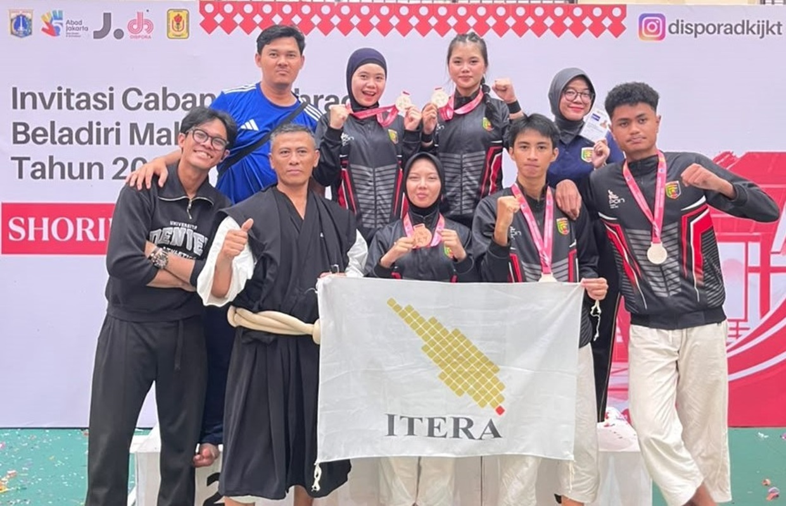

|

Mahasiswa Itera Raih Empat Medali Perak Kejurnas Kempo
Empat mahasiswa Institut Teknologi Sumatera (Itera) meraih empat medali perak dalam Kejuaraan Nasional Kempo pada rangkaian Invitasi Cabang Olahraga Beladiri dan Terukur Mahasiswa Provinsi DKI Jakarta Tahun 2026. Kejuaraan yang diselenggarakan Dinas Pemuda dan Olahraga Provinsi DKI Jakarta itu berlangsung pada 8–10 September 2026 di GOR Matraman, Gelanggang Jakarta Pusat.
Empat medali perak tersebut diraih melalui dua nomor pertandingan. Jennie Elkana Fahira dan Dinara Tahta Arifin, dari Program Studi Teknik Sistem Energi, meraih medali perak kelas embu berpasangan putri. Sementara itu, Muhammad Farel Ramadhani dari Program Studi Teknik Informatika meraih medali perak kelas randori putra 60 kilogram, sedangkan Lelaki Restu Bhumi dari Program Studi Teknik Pertambangan meraih medali perak kelas randori putra 70 kilogram. Keempat mahasiswa tersebut merupakan atlet yang bernaung di bawah Perkumpulan Kempo Indonesia (Perkemi) Lampung.
|

Wujudkan Kampus Inklusif, Itera Resmikan Unit Layanan Disabilitas
Institut Teknologi Sumatera (Itera) resmi memiliki Unit Layanan Disabilitas (ULD) sebagai langkah mewujudkan lingkungan pendidikan tinggi yang inklusif. Peluncuran ULD Itera dilakukan di Aula Gedung Kuliah Umum 2, Kamis, 10 September 2026, yang turut dihadiri Ketua Komisi Disabilitas Nasional Dr. Dante Rigmalia, M.Pd.
Rektor Itera yang diwakili Wakil Rektor Bidang Akademik dan Kemahasiswaan, Ir. Hadi Teguh Yudistira, S.T., Ph.D., dalam sambutannya menyampaikan bahwa layanan disabilitas merupakan bagian dari upaya Itera dalam menjalankan tugas pemerintah untuk mewujudkan pendidikan yang inklusif. Ia menjelaskan bahwa kementerian telah menetapkan sejumlah parameter pendidikan inklusif yang turut memperhatikan aspek ekonomi dan disabilitas.
Menurutnya, kehadiran layanan disabilitas di Itera diharapkan dapat menjadi pemicu untuk terus mengembangkan dan meningkatkan penyelenggaraan pendidikan yang inklusif. Itera berupaya memfasilitasi kebutuhan penyandang disabilitas melalui layanan yang mendukung terciptanya lingkungan pendidikan yang lebih inklusif.
|